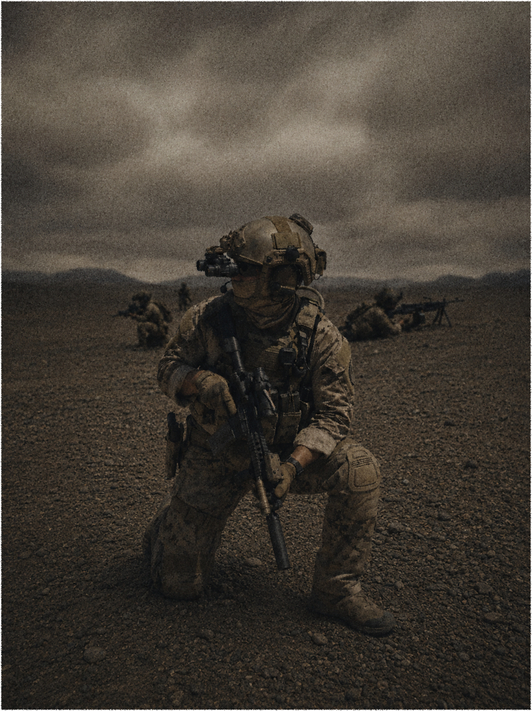
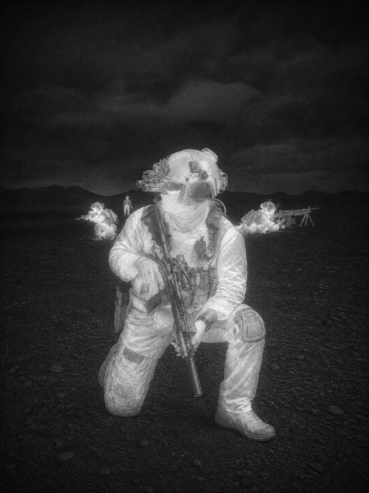

Lyman Systems
Defence electro-optics

Adaptive electro-optics
See the scene.
See the signal.
One field carried from available light into darkness, then resolved through a white-hot thermal channel.



Visible
No light
White-hot